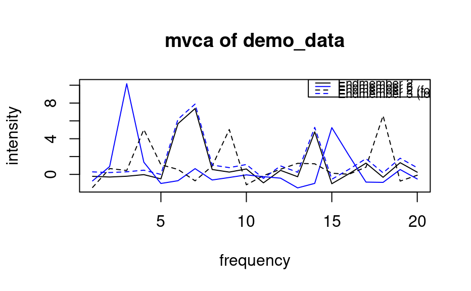

General Interface to Vertex Component Analysis Spectral Unmixing Implementations
Source:R/vca.R, R/vca.default.R, R/vca.formula.R
vca.RdThis algorithm is based on the geometry of convex sets. It exploits the fact that endmembers occupy the vertices of a simplex.
Arguments
- ...
Additional parameters for the methods (currently unused).
- data
Data matrix. It will be converted to a matrix using as.matrix. The matrix should contain a spectrum per row.
- p
Number of endmembers.
- method
The VCA algorithm to use. Options:
05 (
vca05)Lopez2012 (
vcaLopez2012)
Default: 05.
- seed
vca05 generates a random vector. Set the random number generator seed with this argument.
- SNR
The Signal-to-Noise ratio of the data. By default it will be estimated using
estSNR.- EMonly
Boolean that indicates whether the
dataparameter should be stored in the resulting structure.- formula
Formula object.
- frame
Data frame containing the hyperspectral data.
Value
A list which contains:
data: the original data.
indices: the indices of the calculated endmembers.
See also
endmembers to extract the spectra; predict
to determine abundances of endmembers in each sample.
Examples
data(demo_data)
demo <- vca(demo_data, 2, method = "05")
em <- endmembers(demo)
em <- rbind(demo_data[c(7,9),], em)
em[3:4,] <- em[3:4,] + 0.5 # a small offset for the found em's
matplot(t(em), type = "l",
col = c("black", "blue", "black", "blue"), lty = c(1, 1, 2, 2),
xlab = "frequency", ylab = "intensity",
main = "mvca of demo_data")
leg.txt <- c("Endmember 2", "Endmember 3", "Endmember 2 (found)", "Endmember 3 (found)")
legend("topright", leg.txt, col = c("black", "blue", "black", "blue"),
lty = c(1, 1, 2, 2), cex = 0.75)
